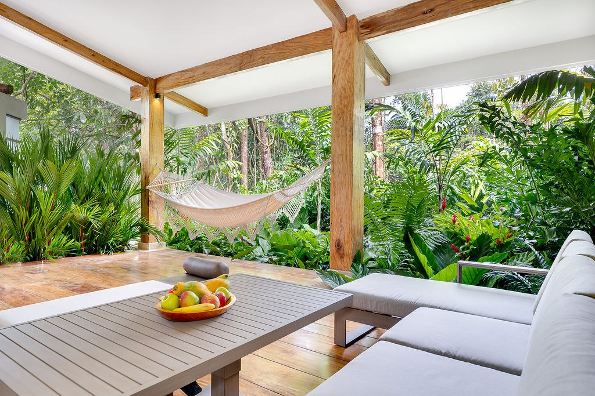

Chachagua Rainforest Resort & Hot Springs and sister property Arenal Rainforest Resort belong to Rainforest Resorts, a Costa Rican resort family. This guide focuses on a Chachagua stay; a Travel Designer can also discuss whether Arenal belongs in your itinerary, with accommodation and transfers confirmed separately.
A trip for two can begin with a surprisingly crowded calendar. There is an excursion before breakfast, another after lunch, and a dinner reservation that leaves little time to change. Planning a rainforest stay in Costa Rica offers another possibility: choose a few experiences that matter to you, then leave room to enjoy the hours around them. At Chachagua Rainforest Resort & Hot Springs, the conversation can start before arrival with a Travel Designer, a local adviser who helps shape the visit around your interests and preferred pace.
A guided nature walk, a yoga session, and a coffee and chocolate experience offer three different ways into the place. There is no need to fit them into one day. Spread across a four-night stay, they can provide a gentle structure while leaving space for conversation, meals, and time in your accommodation. This is an editorial suggestion, rather than an existing package: schedules, availability, participation requirements, and anything included in your booking need to be confirmed for your particular dates.
A Walk That Rewards Attention

Walking together allows companionship without requiring constant conversation. You can stop, notice a leaf, listen, and continue when you are ready. Chachagua's guided nature walk takes place within the property and introduces the rainforest through observation. A guide can give context to something you might otherwise pass without noticing. The point does not have to be reaching a particular distance or collecting a list of sightings. Let the walk become an opportunity to understand a little more about the environment around your stay.
Before making a reservation, explain how much walking you would both enjoy and how comfortable you feel on uneven ground. A relaxed pace does not automatically mean a level surface. Ask the team to confirm the route, duration, physical demands, and recommended equipment. If one of you wants a slower outing or needs to avoid certain inclines, that belongs in the planning conversation. A suitable route makes the experience something you share, rather than an activity one person completes at the other's pace.
Wildlife adds possibility, rather than a guarantee. No animal appears on request, and a guide cannot promise a particular species. Staying on the indicated paths, observing from an appropriate distance, and following instructions lets you enjoy whatever is present that day. A camera or binoculars can be useful companions, but neither needs to direct the outing. You may remember a detail discovered together more clearly than a photograph taken while trying to keep up with the group.
Protect the time after the walk. Returning to your accommodation, changing, and deciding where to eat are worthwhile parts of a holiday. If the arrival journey was tiring, the walk might belong on your second full day rather than your first morning. A Travel Designer can help arrange that sequence. A thoughtful plan does not need a reservation for every hour; it needs clarity about the experiences that require advance booking and flexibility around the moments that do not.
Yoga as Time You Choose Together
A yoga session offers another kind of shared attention, focused on movement and breathing. Chachagua lists yoga among the experiences available to enquire about. Before adding it to your stay, ask whether a suitable session is operating, where it takes place, and what the arrangements are. Do not assume that every class is private, held daily, or included in the room rate. Those practical details should be settled as part of the reservation, rather than inferred from a photograph.
This can be an appealing choice when one partner practises regularly and the other is curious to try. Tell the team about that difference. An instructor can explain whether the session offers appropriate options for your respective experience and any limitations you wish to discuss. There is no need to frame the class as a transformation or attach medical benefits to it. Having time to move without rushing can be reason enough. If only one of you is interested, individual time can also belong in a shared trip.
Place yoga on a separate day from the nature walk if that gives the visit a better balance. An unfilled afternoon does not have to be rescued by a lengthy excursion. Reading, talking, or lingering over a meal gives you time to enjoy the accommodation you selected. Rest becomes more available when it is protected from the expectation that something else must immediately follow. You can decide to do less without feeling that you have missed the point of travelling.
If you would like a photograph, respect the class and anyone else taking part. A holiday moment does not need to look like a production. The real setting and the movements you can comfortably make tell the story better than a demanding pose chosen only for its appearance. For a private session or a particular photographic arrangement, enquire in advance about options and costs. A regular activity should not be expected to include additional services that have never been discussed.
Coffee and Cacao as a Conversation About Place
Coffee and chocolate can appear on a table every day without inviting much thought about their origins. Spending time with them as an experience changes the relationship. Chachagua's coffee and chocolate tour connects these ingredients with Costa Rica's agricultural and cultural traditions. For two people travelling together, it offers a different conversation from the one on the trail. Curiosity can follow an ingredient, a preparation, or a question about the work behind something familiar.
You do not need the same interests to enjoy the visit. One person might arrive with questions about coffee, while the other is more interested in cooking or the country itself. Ask which processes are demonstrated, what tastings are included, and whether dietary needs should be communicated beforehand. Not every demonstration involves taking part in every stage. Harvesting, particular recipes, and specific products should only be expected when the team has confirmed them for your booked experience.
Because this experience is offered at Chachagua, it can fit a stay without adding an external excursion to the programme. You still need the current meeting point and schedule. If you are staying at another property, access and transport require separate coordination. Being part of Rainforest Resorts does not make an activity automatically included or remove the need for a reservation. A clear proposal distinguishes accommodation, experiences, and additional services so you can decide with the complete picture in front of you.
Afterwards, a meal can give the conversation somewhere to continue. Ask about the dining options operating during your visit and choose what appeals that day. Dinner does not need a special theme or a repeat of the tour. Recognising an ingredient, or carrying a new question to the table, can be enough. A trip gains depth when an experience has time to settle, without another organised activity immediately taking its place.
Choosing Somewhere You Want to Return To
Accommodation deserves as much attention as the experiences. Explore Chachagua's lodging categories and ask which one offers the setting and arrangement you want. Master Bungalow, Casita, and Villa should not be treated as interchangeable labels. Views, layouts, and facilities belong to specific categories. If one detail matters to your stay, have it stated clearly in the booking proposal rather than relying on a general description of the resort.
Photographs help when they represent the category actually being offered. A forest or garden outlook is different from a canopy view. A pool or outdoor space shown in one unit should not be assumed to exist in every category. Asking about these differences supports the anticipation of the trip: it helps you choose the place you will enjoy returning to after walking, moving, or learning something together. Detached accommodation also does not, by itself, guarantee absolute quiet.
A possible five-day, four-night stay leaves arrival for settling in and eating according to your transfer schedule. The three experiences can sit across the central days with generous gaps between them. Keep departure free of commitments that could complicate transport. Remove an activity if you want more rest, or give extra attention to the one that interests you most. A comfortable trip for two includes being able to say what you would enjoy repeating and what you would rather leave for another visit.
Start by sharing possible dates, arrival airport, number of nights, and a few things you want from the holiday. That gives a Travel Designer something useful to work with. The rainforest supplies the setting; you choose how to spend time together within it. Explore the available experiences and begin with those that leave room to appreciate the time between them. A holiday can feel full without asking you to be busy throughout it.
Frequently Asked Questions
How many nights should we allow for these experiences?
Four nights is a planning suggestion that allows the three activities to be spread over several days. The right length depends on flights, transfers, and your preferences. It is not a required minimum or a published package.
Do we need a rental car?
That depends on the rest of your route. Ask about transfers from your arrival airport, such as SJO or LIR, and request a quotation with an approximate journey time and conditions for the actual route. No unverified transfer duration is assumed here.
Are the activities included in the room rate?
Do not assume so. Reservations should confirm prices, current schedules, inclusions, availability, and participation conditions before you accept the proposal.
Can we arrange private experiences?
You can enquire. Private arrangements, guide or instructor language, and any special services need to be expressly confirmed and quoted.
What happens if the weather changes?
Ask about operating conditions and available alternatives for each activity. Rain can occur during a rainforest visit. No travel date guarantees dry weather or particular wildlife sightings.